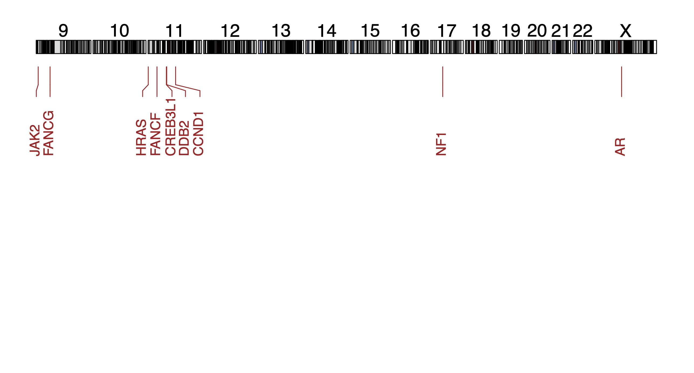

4 Copy number analyses
# Libraries and sources
library(tidyverse)
library(openxlsx)
library(GenomicRanges)
source('R/find_specific_cna_sc.R')
source('R/get_cytoband_coverage.R')
source('R/get_genes.R')
source('R/get_oncogenes.R')
source('R/plot_genes_karyotype.R')4.1 Colorectal cancer-specific arm-level copy number alterations per organoid
########
# Data #
########
load('../cna_analysis/rda/subclonal_dynamics/man_select_files_edivisive.rda')
# !!! GITHUB SPECIFIC CODE !!! #
# adding '../cna_analysis/' to each path within man_select_files_edivisive
man_select_files_edivisive <- lapply(man_select_files_edivisive, function(x) paste0("../cna_analysis/", x))
###########
# Wrangle #
###########
# extract only prerad clines
# prerad clines
kra_list <-
c("kra003",
"kra005",
"kra007",
"kra009",
"kra023",
"kra025",
"kra027")
#######
# Run #
#######
## finding common CNAs within each subclone for each organoids.
common_cnas <- find_specific_cna_sc(
list_resistant = man_select_files_edivisive[kra_list],
# make sure to input this as a list!
list_sensitive = NULL,
perc_cutoff_within_subclone_resistant = 0.8,
# CNA needs to be in 80% of the cells or more
perc_cutoff_within_subclone_sensitive = NULL,
per_cutoff_across_subclone_resistant = NULL,
per_cutoff_across_subclone_sensitive = NULL,
return_cnas_per_subclone = T
)## [1] "Computing (this may take some minutes)..."
## [1] "Extracted segment info from files"
## [1] "Computing (this may take some minutes)..."
## [1] "Extracted CNAs that are shared by 80% of single cells within each resistant subclone, and by % of single cells within each sensitive subclone"## mapping CNA to cytoband location
# for amplifications
amplifications <-
lapply(common_cnas$amplifications, get_cytoband_coverage)
# Extract frequency of arm level amplifications n indicates the how many
# organoids contain the CNA
arm_amp <- lapply(amplifications, function(x) {
return(x[[2]])
}) %>%
bind_rows(.id = "cline") %>%
group_by(cline, chromosome, arm) %>%
count(percentage_arm_affected > 0.8) %>%
arrange(desc(n)) %>%
ungroup(cline) %>%
count(chromosome) %>%
arrange(desc(n)) %>%
mutate(freq = n / 7)
DT::datatable(arm_amp, caption = "Arm-level amplifications in organoids")# for deletions
deletions <- lapply(common_cnas$deletions, get_cytoband_coverage)
# Extract frequency of arm level deletions. n indicates the how many
# organoids contain the CNA
arm_del <- lapply(deletions, function(x) {
return(x[[2]])
}) %>%
bind_rows(.id = "cline") %>%
group_by(cline, chromosome, arm) %>%
count(percentage_arm_affected > 0.8) %>%
arrange(desc(n)) %>%
ungroup(cline) %>%
count(chromosome) %>%
arrange(desc(n)) %>%
mutate(freq = n / 7)
DT::datatable(arm_del, caption = "Arm-level deletions in organoids")4.2 Copy number alterations per subclone
4.2.1 Copy number alterations specific to HUB062A
########
# Data #
########
load('../cna_analysis/rda/subclonal_dynamics/subclone_list.rda')
# !!! GITHUB SPECIFIC CODE !!! #
# adding '../cna_analysis/' to each path within man_select_files_edivisive
subclone_list <- lapply(subclone_list, function(x) paste0("../cna_analysis/", x))
###########
# Wrangle #
###########
# extracting resistant and sensitive subclones of hub062
hub062 <-
names(subclone_list)[grepl('hub062', names(subclone_list))]
res <- hub062[grepl('hub062_postrad_a', hub062)]
sens <- hub062[grepl('hub062_postrad_b|hub062_postrad_c', hub062)]
# remove cycle 2
sens <- sens[!grepl('c2', sens)]
#######
# Run #
#######
## finding common CNAs within each subclone for each organoids.
hub062a_specific_cnas <- find_specific_cna_sc(
list_resistant = subclone_list[res],
list_sensitive = subclone_list[sens],
perc_cutoff_within_subclone_resistant = 0.6,
perc_cutoff_within_subclone_sensitive = 0.6,
per_cutoff_across_subclone_resistant = 0.2,
per_cutoff_across_subclone_sensitive = 0.2,
return_cnas_per_subclone = F
)## [1] "Computing (this may take some minutes)..."
## [1] "Extracted segment info from files"
## [1] "Computing (this may take some minutes)..."
## [1] "Extracted CNAs that are shared by 60 and 60% of single cells within resistant and sensitive subclones, respectively, and that are shared by 20 and 20% across resistant and sensitive subclones, respectively."
## [1] "Computing (few seconds)..."
## [1] "Identified amplifications and deletions that are unique to resistant or sensitive subclones"## mapping CNA to cytoband location
# for amplifications
ampl_hub062a <-
get_cytoband_coverage(hub062a_specific_cnas$unique_resistant_ampl)
DT::datatable(as.data.frame(ampl_hub062a[[1]]), caption = "HUB062A-specific amplifications (exact location)")del_hub062a <-
get_cytoband_coverage(hub062a_specific_cnas$unique_resistant_del)
# No HUB062A-specific deletions were found.#######
# Run #
#######
# All genes #
#############
genes_ampl_hub062a <- get_genes(ampl_hub062a[[1]])
DT::datatable(as.data.frame(genes_ampl_hub062a), caption = "Genes on HUB062A-specific amplifications")
# Oncogenes #
#############
oncogenes_ampl_hub062a <- get_oncogenes(ampl_hub062a[[1]])
DT::datatable(as.data.frame(oncogenes_ampl_hub062a), caption = "Oncogenes on HUB062A-specific amplifications")########
# Data #
########
load('../cna_analysis/rda/cna_analysis/hub062a_specific_cnas_genes.rda')
###########
# Wrangle #
###########
# plot_genes_karyotype needs a GRange with seqnames, ranges, strand and hgnc_symbol
# add ampl/del column
oncogenes_ampl_hub062a$cn <- 'amplified'
# bind dataframes
oncogenes <- oncogenes_ampl_hub062a
# extract needed columns
keep <-
c('Gene Symbol',
'chromosome_name',
'start_position',
'end_position',
'cn')
oncogenes <- oncogenes[, keep]
# rename
colnames(oncogenes) <-
c('hgnc_symbol', 'seqnames', 'start', 'end', 'cn')
# convert to dataframe
onco_grange <- makeGRangesFromDataFrame(oncogenes)
# metadata is deleted
onco_grange$hgnc_symbol <- oncogenes$hgnc_symbol
onco_grange$cn <- oncogenes$cn
##########################
# Choose genes to depict #
##########################
oncogenes_ampl_hub062a <-
oncogenes_ampl_hub062a[order(oncogenes_ampl_hub062a$`Genome Location`),]
show_oncogenes_ampl <-
c('FANCF',
'CREB3L1',
'DDB2',
'HRAS',
'CCND1',
'NF1',
'FANCG',
'JAK2',
'AR')
show_oncogenes <- c(show_oncogenes_ampl)
########
# PLOT #
########
plot_genes_karyotype(
onco_grange,
show_genes = show_oncogenes,
dist = -45,
show_chromosomes = c(
"chr9",
"chr10",
"chr11",
"chr12",
"chr13",
"chr14",
"chr15",
"chr16",
"chr17",
"chr18",
"chr19",
"chr20",
"chr21",
"chr22",
"chrX"
)
)
4.2.2 Copy number alterations specific to resistant subclones
########
# Data #
########
load('../cna_analysis/rda/cna_analysis/hub062a_specific_cnas.rda')
###########
# Wrangle #
###########
# extracting resistant and sensitive subclones of hub062
# excluding HUB197, as here subclones were probably not selected on the basis of CNAs
# but on the basis of the presence of WGD!
resistant <- names(subclone_list)[c(grep('hub005_prerad_b', names(subclone_list)),
grep('hub183_prerad', names(subclone_list)),
grep('hub062_postrad_a', names(subclone_list))
)]
# in resistant,
# in resistant, hub005 a.a and a.b need to be joined together, as they are no subclones
hub005_prerad_a.a_a.b <- c(subclone_list$hub005_prerad_a.a, subclone_list$hub005_prerad_a.b)
# joining the combined clones to resistant
res_list <- subclone_list[resistant]
res_list[['hub005_prerad_a.a_a.b']] <- hub005_prerad_a.a_a.b
# comparing resistant to sensitive lines yields to many results.
rest <- names(subclone_list)[c(grep('hub106_prerad', names(subclone_list)),
grep('hub062_prerad_b', names(subclone_list)),
grep('hub062_prerad_c', names(subclone_list)),
grep('hub197_prerad_b', names(subclone_list))
)]
rest_list <- subclone_list[rest]
#######
# Run #
#######
## finding common CNAs within each subclone for each organoid.
resistant_specific_cnas <- find_specific_cna_sc(
list_resistant = res_list,
list_sensitive = rest_list,
perc_cutoff_within_subclone_resistant = 0.6, # needs to be present in 60% or more cells per subclone
perc_cutoff_within_subclone_sensitive = 0.6,
per_cutoff_across_subclone_resistant = 0.8, # if present in 80% of the subclones, it will be called a CNA and might thus be resistant-specific (depending on if it is also found in sensitive subclones)
per_cutoff_across_subclone_sensitive = 0.1, # if present in 20%, it is already called a CNA in sensitive subclones and thus wont be detected as a resistant specific CNA
return_cnas_per_subclone = F
)## [1] "Computing (this may take some minutes)..."
## [1] "Extracted segment info from files"
## [1] "Computing (this may take some minutes)..."
## [1] "Extracted CNAs that are shared by 60 and 60% of single cells within resistant and sensitive subclones, respectively, and that are shared by 80 and 10% across resistant and sensitive subclones, respectively."
## [1] "Computing (few seconds)..."
## [1] "Identified amplifications and deletions that are unique to resistant or sensitive subclones"## mapping CNA to cytoband location
# for amplifications
ampl_resistant <-
get_cytoband_coverage(resistant_specific_cnas$unique_resistant_ampl)
del_resistant <-
get_cytoband_coverage(resistant_specific_cnas$unique_resistant_del)
# Both ampl_resistant and del_resistant are empty, no resistance specific cnas
# shared by subclones was found4.2.3 Newly acquired copy number alterations
###############
# Description #
###############
# We are going to define the presence of 'new' CNAs after radiation therapy.
# I define the following rules:
# (i) Analysis will be done within subclone
# (ii) A 'new' CNA will be called new only if it was not found before radiation
# (iii) I exclude all subclones where the numbers of cells within a subclone is lower than 5.
# (iv) Because in essence, all cells are related to each other (even those in distinct)
# subclones, I am going to compare each post-rad subclone to all pooled subclones before
# radiation.
# (v) We are looking for acquired CNAs; CNAs that could explain why cells with that
# CNA propagated. Therefore, the CNA has to be present in at least 50% of the cells.
###########
# Wrangle #
###########
# remove subclones with fewer than 5 cells pre-or post rad.
lapply(subclone_list, length)## $hub183_prerad_a
## [1] 127
##
## $hub183_postrad_a
## [1] 110
##
## $hub005_prerad_a.a
## [1] 25
##
## $hub005_prerad_a.b
## [1] 13
##
## $hub005_prerad_b
## [1] 118
##
## $hub005_postrad_a.a
## [1] 17
##
## $hub005_postrad_a.b
## [1] 2
##
## $hub005_postrad_b
## [1] 70
##
## $hub106_prerad_a
## [1] 64
##
## $hub106_prerad_b
## [1] 59
##
## $hub106_prerad_c
## [1] 4
##
## $hub106_postrad_a
## [1] 60
##
## $hub106_postrad_b
## [1] 103
##
## $hub106_postrad_c
## [1] 18
##
## $hub062_prerad_a
## [1] 2
##
## $hub062_prerad_b
## [1] 127
##
## $hub062_prerad_c
## [1] 7
##
## $hub062_postrad_a
## [1] 39
##
## $hub062_postrad_b
## [1] 38
##
## $hub062_postrad_c
## [1] 7
##
## $hub062_postrad_c2_a
## [1] 187
##
## $hub062_postrad_c2_c
## [1] 1
##
## $hub015_prerad_a.b
## [1] 276
##
## $hub015_prerad_b
## [1] 1
##
## $hub015_postrad_a.a
## [1] 110
##
## $hub015_postrad_a.b
## [1] 157
##
## $hub015_postrad_b
## [1] 14
##
## $hub181i_prerad_a
## [1] 72
##
## $hub181i_prerad_b
## [1] 233
##
## $hub181i_postrad_a
## [1] 72
##
## $hub181i_postrad_b
## [1] 239
##
## $hub197_prerad_a
## [1] 24
##
## $hub197_prerad_b
## [1] 17
##
## $hub197_prerad_c
## [1] 91
##
## $hub197_postrad_a
## [1] 252
##
## $hub062biological_prerad_a
## [1] 14
##
## $hub062biological_prerad_b
## [1] 205
##
## $hub062biological_prerad_c
## [1] 13
##
## $hub062biological_postrad_a
## [1] 178remove_me <- c('hub005_prerad_a.b', 'hub005_postrad_a.b', # because only 2 cells in hub005_postrad_a.b
'hub062_prerad_a', # only 2 cells, here I am going to compare C1 vs C2, so
# I don't remove hub062_postrad_a
'hub015_prerad_b', 'hub015_postrad_b', # only 1 cell in prerad
'hub197_prerad_b','hub197_prerad_b', # extinction
'hub197_prerad_c','hub197_postrad_c' # extinction
)
subclone_list <- subclone_list[!(names(subclone_list) %in% remove_me)]
#############
# Variables #
#############
# Percentage of cells cut-off
pcc <- 0.5
########
# RUNS #
########
# HUB183 #
######################################################################
# Extract HUB183
hub183 <- names(subclone_list)[grepl('hub183', names(subclone_list))]
# combine prerad subclones and a.b
hub183_prerad_subclones <- hub183[grepl('prerad', hub183)]
# get each postrad subclone individually
hub183_postrad_a <- hub183[grepl('hub183_postrad_a', hub183)]
# no new genomic aberrations
hub183_postrad_a <- find_specific_cna_sc(
list_resistant = subclone_list[hub183_postrad_a],
list_sensitive = subclone_list[hub183_prerad_subclones],
perc_cutoff_within_subclone_resistant = pcc,
perc_cutoff_within_subclone_sensitive = 0.001,
per_cutoff_across_subclone_resistant = 0.001,
per_cutoff_across_subclone_sensitive = 0.001,
return_cnas_per_subclone = F
)## [1] "Computing (this may take some minutes)..."
## [1] "Extracted segment info from files"
## [1] "Computing (this may take some minutes)..."
## [1] "Extracted CNAs that are shared by 50 and 0.1% of single cells within resistant and sensitive subclones, respectively, and that are shared by 0.1 and 0.1% across resistant and sensitive subclones, respectively."
## [1] "Computing (few seconds)..."
## [1] "Identified amplifications and deletions that are unique to resistant or sensitive subclones"# HUB005 #
######################################################################
# Extract HUB005
hub005 <- names(subclone_list)[grepl('hub005', names(subclone_list))]
# combine prerad subclones and a.b
hub005_prerad_subclones <- hub005[grepl('prerad', hub005)]
# get each postrad subclone individually
hub005_postrad_a.a <- hub005[grepl('hub005_postrad_a.a', hub005)]
hub005_postrad_b <- hub005[grepl('hub005_postrad_b', hub005)]
# no new CNAs
hub005_postrad_a.a <- find_specific_cna_sc(
list_resistant = subclone_list[hub005_postrad_a.a],
list_sensitive = subclone_list[hub005_prerad_subclones],
perc_cutoff_within_subclone_resistant = pcc,
perc_cutoff_within_subclone_sensitive = 0.001,
per_cutoff_across_subclone_resistant = 0.001,
per_cutoff_across_subclone_sensitive = 0.001,
return_cnas_per_subclone = F
)## [1] "Computing (this may take some minutes)..."
## [1] "Extracted segment info from files"
## [1] "Computing (this may take some minutes)..."
## [1] "Extracted CNAs that are shared by 50 and 0.1% of single cells within resistant and sensitive subclones, respectively, and that are shared by 0.1 and 0.1% across resistant and sensitive subclones, respectively."
## [1] "Computing (few seconds)..."
## [1] "Identified amplifications and deletions that are unique to resistant or sensitive subclones"# no new CNAs
hub005_postrad_b <- find_specific_cna_sc(
list_resistant = subclone_list[hub005_postrad_b],
list_sensitive = subclone_list[hub005_prerad_subclones],
perc_cutoff_within_subclone_resistant = pcc,
perc_cutoff_within_subclone_sensitive = 0.001,
per_cutoff_across_subclone_resistant = 0.001,
per_cutoff_across_subclone_sensitive = 0.001,
return_cnas_per_subclone = F
)## [1] "Computing (this may take some minutes)..."
## [1] "Extracted segment info from files"
## [1] "Computing (this may take some minutes)..."
## [1] "Extracted CNAs that are shared by 50 and 0.1% of single cells within resistant and sensitive subclones, respectively, and that are shared by 0.1 and 0.1% across resistant and sensitive subclones, respectively."
## [1] "Computing (few seconds)..."
## [1] "Identified amplifications and deletions that are unique to resistant or sensitive subclones"# HUB015 #
######################################################################
# Extract HUB015
hub015 <- names(subclone_list)[grepl('hub015', names(subclone_list))]
# combine prerad subclones and a.b
hub015_prerad_subclones <- hub015[grepl('prerad', hub015)]
# get each postrad subclone individually
hub015_postrad_a.a <- hub015[grepl('hub015_postrad_a.a', hub015)]
hub015_postrad_a.b <- hub015[grepl('hub015_postrad_a.b', hub015)]
hub015_postrad_b <- hub015[grepl('hub015_postrad_b', hub015)]
# hub015_postrad_a.a: new deletion on 4q
hub015_postrad_a.a <- find_specific_cna_sc(
list_resistant = subclone_list[hub015_postrad_a.a],
list_sensitive = subclone_list[hub015_prerad_subclones],
perc_cutoff_within_subclone_resistant = pcc,
perc_cutoff_within_subclone_sensitive = 0.001,
per_cutoff_across_subclone_resistant = 0.001,
per_cutoff_across_subclone_sensitive = 0.001,
return_cnas_per_subclone = F
)## [1] "Computing (this may take some minutes)..."
## [1] "Extracted segment info from files"
## [1] "Computing (this may take some minutes)..."
## [1] "Extracted CNAs that are shared by 50 and 0.1% of single cells within resistant and sensitive subclones, respectively, and that are shared by 0.1 and 0.1% across resistant and sensitive subclones, respectively."
## [1] "Computing (few seconds)..."
## [1] "Identified amplifications and deletions that are unique to resistant or sensitive subclones"# HUB015 has a new deletion following radiation in 4q
DT::datatable(as.data.frame(get_cytoband_coverage(hub015_postrad_a.a$unique_resistant_del)[[1]]))# This deletion contains the following oncogenes
DT::datatable(get_oncogenes(get_cytoband_coverage(hub015_postrad_a.a$unique_resistant_del)[[1]]))# hub015_postrad_a.a: no new amplificatoins no new deletions
hub015_postrad_a.b <- find_specific_cna_sc(
list_resistant = subclone_list[hub015_postrad_a.b],
list_sensitive = subclone_list[hub015_prerad_subclones],
perc_cutoff_within_subclone_resistant = pcc,
perc_cutoff_within_subclone_sensitive = 0.001,
per_cutoff_across_subclone_resistant = 0.001,
per_cutoff_across_subclone_sensitive = 0.001,
return_cnas_per_subclone = F
)## [1] "Computing (this may take some minutes)..."
## [1] "Extracted segment info from files"
## [1] "Computing (this may take some minutes)..."
## [1] "Extracted CNAs that are shared by 50 and 0.1% of single cells within resistant and sensitive subclones, respectively, and that are shared by 0.1 and 0.1% across resistant and sensitive subclones, respectively."
## [1] "Computing (few seconds)..."
## [1] "Identified amplifications and deletions that are unique to resistant or sensitive subclones"#
# HUB106 #
######################################################################
# Extract HUB106
hub106 <- names(subclone_list)[grepl('hub106', names(subclone_list))]
# combine prerad subclones and a.b
hub106_prerad_subclones <- hub106[grepl('prerad', hub106)]
# get each postrad subclone individually
hub106_postrad_a <- hub106[grepl('hub106_postrad_a', hub106)]
hub106_postrad_b <- hub106[grepl('hub106_postrad_b', hub106)]
hub106_postrad_c <- hub106[grepl('hub106_postrad_c', hub106)]
# no new CNAs
hub106_postrad_a <- find_specific_cna_sc(
list_resistant = subclone_list[hub106_postrad_a],
list_sensitive = subclone_list[hub106_prerad_subclones],
perc_cutoff_within_subclone_resistant = pcc,
perc_cutoff_within_subclone_sensitive = 0.001,
per_cutoff_across_subclone_resistant = 0.001,
per_cutoff_across_subclone_sensitive = 0.001,
return_cnas_per_subclone = F
)## [1] "Computing (this may take some minutes)..."
## [1] "Extracted segment info from files"
## [1] "Computing (this may take some minutes)..."
## [1] "Extracted CNAs that are shared by 50 and 0.1% of single cells within resistant and sensitive subclones, respectively, and that are shared by 0.1 and 0.1% across resistant and sensitive subclones, respectively."
## [1] "Computing (few seconds)..."
## [1] "Identified amplifications and deletions that are unique to resistant or sensitive subclones"# no new CNAs
hub106_postrad_b <- find_specific_cna_sc(
list_resistant = subclone_list[hub106_postrad_b],
list_sensitive = subclone_list[hub106_prerad_subclones],
perc_cutoff_within_subclone_resistant = pcc,
perc_cutoff_within_subclone_sensitive = 0.001,
per_cutoff_across_subclone_resistant = 0.001,
per_cutoff_across_subclone_sensitive = 0.001,
return_cnas_per_subclone = F
)## [1] "Computing (this may take some minutes)..."
## [1] "Extracted segment info from files"
## [1] "Computing (this may take some minutes)..."
## [1] "Extracted CNAs that are shared by 50 and 0.1% of single cells within resistant and sensitive subclones, respectively, and that are shared by 0.1 and 0.1% across resistant and sensitive subclones, respectively."
## [1] "Computing (few seconds)..."
## [1] "Identified amplifications and deletions that are unique to resistant or sensitive subclones"# no new CNAs
hub106_postrad_c <- find_specific_cna_sc(
list_resistant = subclone_list[hub106_postrad_c],
list_sensitive = subclone_list[hub106_prerad_subclones],
perc_cutoff_within_subclone_resistant = pcc,
perc_cutoff_within_subclone_sensitive = 0.001,
per_cutoff_across_subclone_resistant = 0.001,
per_cutoff_across_subclone_sensitive = 0.001,
return_cnas_per_subclone = F
)## [1] "Computing (this may take some minutes)..."
## [1] "Extracted segment info from files"
## [1] "Computing (this may take some minutes)..."
## [1] "Extracted CNAs that are shared by 50 and 0.1% of single cells within resistant and sensitive subclones, respectively, and that are shared by 0.1 and 0.1% across resistant and sensitive subclones, respectively."
## [1] "Computing (few seconds)..."
## [1] "Identified amplifications and deletions that are unique to resistant or sensitive subclones"# HUB062 #
######################################################################
hub062 <- names(subclone_list)[grepl('hub062', names(subclone_list))]
# combine prerad subclones and a.b
hub062_prerad_subclones <- hub062[grepl('prerad', hub062)]
# get each postrad subclone individually
hub062_postrad_a <- hub062[grepl('hub062_postrad_a', hub062)]
hub062_postrad_b <- hub062[grepl('hub062_postrad_b', hub062)]
hub062_postrad_c <- hub062[grepl('hub062_postrad_c', hub062)]
hub062biological_postrad_a <- hub062[grepl('hub062biological_postrad_a', hub062)]
hub062_postrad_c2_a <- hub062[grepl('hub062_postrad_c2_a', hub062)]
hub062_postrad_c2_c <- hub062[grepl('hub062_postrad_c2_c', hub062)]
# No new CNAs
hub062_postrad_a <- find_specific_cna_sc(
list_resistant = subclone_list[hub062_postrad_a],
list_sensitive = subclone_list[hub062_prerad_subclones],
perc_cutoff_within_subclone_resistant = pcc,
perc_cutoff_within_subclone_sensitive = 0.001,
per_cutoff_across_subclone_resistant = 0.001,
per_cutoff_across_subclone_sensitive = 0.001,
return_cnas_per_subclone = F
)## [1] "Computing (this may take some minutes)..."
## [1] "Extracted segment info from files"
## [1] "Computing (this may take some minutes)..."
## [1] "Extracted CNAs that are shared by 50 and 0.1% of single cells within resistant and sensitive subclones, respectively, and that are shared by 0.1 and 0.1% across resistant and sensitive subclones, respectively."
## [1] "Computing (few seconds)..."
## [1] "Identified amplifications and deletions that are unique to resistant or sensitive subclones"# No new CNAs
hub062_postrad_b <- find_specific_cna_sc(
list_resistant = subclone_list[hub062_postrad_b],
list_sensitive = subclone_list[hub062_prerad_subclones],
perc_cutoff_within_subclone_resistant = pcc,
perc_cutoff_within_subclone_sensitive = 0.001,
per_cutoff_across_subclone_resistant = 0.001,
per_cutoff_across_subclone_sensitive = 0.001,
return_cnas_per_subclone = F
)## [1] "Computing (this may take some minutes)..."
## [1] "Extracted segment info from files"
## [1] "Computing (this may take some minutes)..."
## [1] "Extracted CNAs that are shared by 50 and 0.1% of single cells within resistant and sensitive subclones, respectively, and that are shared by 0.1 and 0.1% across resistant and sensitive subclones, respectively."
## [1] "Computing (few seconds)..."
## [1] "Identified amplifications and deletions that are unique to resistant or sensitive subclones"# No new CNAs
hub062_postrad_c <- find_specific_cna_sc(
list_resistant = subclone_list[hub062_postrad_c],
list_sensitive = subclone_list[hub062_prerad_subclones],
perc_cutoff_within_subclone_resistant = pcc,
perc_cutoff_within_subclone_sensitive = 0.001,
per_cutoff_across_subclone_resistant = 0.001,
per_cutoff_across_subclone_sensitive = 0.001,
return_cnas_per_subclone = F
)## [1] "Computing (this may take some minutes)..."
## [1] "Extracted segment info from files"
## [1] "Computing (this may take some minutes)..."
## [1] "Extracted CNAs that are shared by 50 and 0.1% of single cells within resistant and sensitive subclones, respectively, and that are shared by 0.1 and 0.1% across resistant and sensitive subclones, respectively."
## [1] "Computing (few seconds)..."
## [1] "Identified amplifications and deletions that are unique to resistant or sensitive subclones"# No new CNAs
hub062biological_postrad_a <- find_specific_cna_sc(
list_resistant = subclone_list[hub062biological_postrad_a],
list_sensitive = subclone_list[hub062_prerad_subclones],
perc_cutoff_within_subclone_resistant = pcc,
perc_cutoff_within_subclone_sensitive = 0.001,
per_cutoff_across_subclone_resistant = 0.001,
per_cutoff_across_subclone_sensitive = 0.001,
return_cnas_per_subclone = F
)## [1] "Computing (this may take some minutes)..."
## [1] "Extracted segment info from files"
## [1] "Computing (this may take some minutes)..."
## [1] "Extracted CNAs that are shared by 50 and 0.1% of single cells within resistant and sensitive subclones, respectively, and that are shared by 0.1 and 0.1% across resistant and sensitive subclones, respectively."
## [1] "Computing (few seconds)..."
## [1] "Identified amplifications and deletions that are unique to resistant or sensitive subclones"# No new CNAs
hub062_postrad_c2_a <- find_specific_cna_sc(
list_resistant = subclone_list[hub062_postrad_c2_a],
list_sensitive = subclone_list[hub062_prerad_subclones],
perc_cutoff_within_subclone_resistant = pcc,
perc_cutoff_within_subclone_sensitive = 0.001,
per_cutoff_across_subclone_resistant = 0.001,
per_cutoff_across_subclone_sensitive = 0.001,
return_cnas_per_subclone = F
)## [1] "Computing (this may take some minutes)..."
## [1] "Extracted segment info from files"
## [1] "Computing (this may take some minutes)..."
## [1] "Extracted CNAs that are shared by 50 and 0.1% of single cells within resistant and sensitive subclones, respectively, and that are shared by 0.1 and 0.1% across resistant and sensitive subclones, respectively."
## [1] "Computing (few seconds)..."
## [1] "Identified amplifications and deletions that are unique to resistant or sensitive subclones"# No new CNAs
hub062_postrad_c2_c <- find_specific_cna_sc(
list_resistant = subclone_list[hub062_postrad_c2_c],
list_sensitive = subclone_list[hub062_prerad_subclones],
perc_cutoff_within_subclone_resistant = pcc,
perc_cutoff_within_subclone_sensitive = 0.001,
per_cutoff_across_subclone_resistant = 0.001,
per_cutoff_across_subclone_sensitive = 0.001,
return_cnas_per_subclone = F
)## [1] "Computing (this may take some minutes)..."
## [1] "Extracted segment info from files"
## [1] "Computing (this may take some minutes)..."
## [1] "Extracted CNAs that are shared by 50 and 0.1% of single cells within resistant and sensitive subclones, respectively, and that are shared by 0.1 and 0.1% across resistant and sensitive subclones, respectively."
## [1] "Computing (few seconds)..."
## [1] "Identified amplifications and deletions that are unique to resistant or sensitive subclones"